2010-04-09 Mazar-e Sharif
～中國製造～
早上，我穿上 Shalwar 在旅館內走動，從鏡中看見我的一身裝扮真在很滑稽，所以出門前還是穿回普通便服。
阿富汗街頭常見一些黃色的士聚在一起，司機在車外叫喊目的地名，這些是 shared taxi，每個目的地的 shared taxi 都有固定的上客點。往 Balhk 的 shared taxi 卻不在市中心附近，要行一段時間才到。
車費視乎一部的士坐多少客人而定，像我今次，有成七個乘客，每人只用 20 Afg，勁抵！車程可要二十公里的啊。而且可以和當地人一起逼在一起，真是很逼....
和我一起逼在一起的兩個當地人如常好客地邀請我和他們一起，不過我實在很想自己行，便拒絕了。
大隻佬曾說，若我想看十分古老的地方，就要去一去 Balhk。
Balhk 是遠古的城市，古蹟如 Bala Hissar 和 City Walls 已經剩下些少痕跡，這裏更有阿富汗最古老的 Mosque，但都只剩下幾根柱和數塊牆壁。
在 Balhk 古城中心公園，見到 Madrassa arch，再經過公園中的樹木，漸漸看見 Shrine of Khoja Abu Nasr Parsa，今天是星期五，不知要搞什麼，不准非穆斯林進入，在這裏我終於見到一個外國遊客了，他是個老人家，似乎十分希望入去，但又不能，在門外站著，和人說，他來阿富汗就為了這裏，一副可憐的樣子，真是誇張。
我不是好恨入去的，Bulkh 還有很多值得看的地方。行去北面的 Fortress of Bala Hissar，這裏很大，但卻很荒蕪，像個山丘多過堡壘，留下只有些許壁壘。不過有很多人駛車上去，看見山頂上聚了不少人。
再次經過 Shrine of Khoja Abu Nasr Parsa，裏面好像搞些什麼，很大聲的廣播，聽到有個人很激動的說阿拉怎樣阿拉怎樣，和耶教的一些人大大聲說上帝如何沒什麼分別，每個宗教都有這些東西。
天氣真是很熱，行到去 City Walls 累到不行，City Walls 也不是真的是城牆的樣子，而是像小型山脈，有些地方都幾斜。
再往南行，經過一個「士多」，在路邊的一個小檔口，被一個年輕男子叫住，他讓開座位請我坐下，然後說想和我談話。
我發覺和當地人談話已經變成我旅行的重點節目，那些什麼景點也可以不理。
就算可以整天不說話的我，也不愁沒有話題，因為他們實在有很多問題，想知道外面的人是怎樣，和他在這裏也不知談了多久，由烈日當空到天開始暗。
他名叫 Nazir，家人親人都是農民，他說在這裏農民不會有希望。我問他不是有個檔口嗎，他說是的，但整天也沒有多少人會光顧，又說這裏很多人也沒工做，就算在街邊賣東西，可能整天也沒有生意，一個月，一年，也是這樣地過。
Nazir 不喜歡阿富汗，想離開去別的國家，問我去中國要如何辦，在他們眼中，中國好像是個很好的地方，他說這裏什麼也是中國製造的，我問為什麼，他說因為很便宜，我問他這樣好嗎，他說好啊，人人都買中國的東西，我說這樣不好。明顯他們還未發覺什麼叫做賤物鬥窮人。
看著他，這麼純樸的人，想到他若果去到別的地方，在五光十色的複雜世界，做廉價勞工，被人剝削，就覺得悲哀。這個重建中的國家，眼看有很多基本的東西還未有，以我這個簡單頭腦的想法，就覺得其實有很多事情可以給人民做，一起重建這個國家，很多東西可解決。
不過很多理想在頭腦複雜和很多顧慮的人手上就實行不了，我問 Nazir 你不喜歡阿富汗現任的總統嗎？「NO!!!」但他是民選的啊，即是你當時不是選他了。「He cheat！」
阿富汗主要人口是 Pashtuns，大概是 2009 年總統大選時，多數 Pashtuns 選了 Hamid Karzai。但 Nazir 喜歡第二大熱後選人 Doctor Abdullah，因為他以前有參與抗俄。
這裏真是很熱，我買了一罐可樂，他說 Mazar 是第二熱城市，第一熱是 Jalalabad。他叫我今晚就在這裏過夜，但我明早要很早就離開 Mazar 了。
時間不早，行去好鬼死遠的 No Gombad Mosque，阿富汗最古老的 Mosque，有三個當地人在參觀，二男一女，這時候的當地人不一定女的就要幪面，也不是很多女性穿 burqa，穿不穿，幪不幪，都是她們的選擇，當然其中有不自願的選擇吧。那女子更主動來搭訕。
走時她給了一條青瓜古蹟的看守人，不知為什麼，但當我走時，那看守人要我施捨，才明白，乜佢咁醒預備定條青瓜。
回到 Mazar，在一個果汁檔買鮮甘筍汁，遇上一個男人拖著兩個小女孩，他說我們是親戚，說他們的祖先千年前由蒙古來這裏，乜咁久遠呀...「We have same face」他很開心地說，怪不得有人說我似當地人。
吃多一次手造雪糕，走去 Hammam，但太晚關門了.... 結果今晚捱冷水澡。
～中國製造～
早上，我穿上 Shalwar 在旅館內走動，從鏡中看見我的一身裝扮真在很滑稽，所以出門前還是穿回普通便服。
阿富汗街頭常見一些黃色的士聚在一起，司機在車外叫喊目的地名，這些是 shared taxi，每個目的地的 shared taxi 都有固定的上客點。往 Balhk 的 shared taxi 卻不在市中心附近，要行一段時間才到。
車費視乎一部的士坐多少客人而定，像我今次，有成七個乘客，每人只用 20 Afg，勁抵！車程可要二十公里的啊。而且可以和當地人一起逼在一起，真是很逼....
和我一起逼在一起的兩個當地人如常好客地邀請我和他們一起，不過我實在很想自己行，便拒絕了。
大隻佬曾說，若我想看十分古老的地方，就要去一去 Balhk。
Balhk 是遠古的城市，古蹟如 Bala Hissar 和 City Walls 已經剩下些少痕跡，這裏更有阿富汗最古老的 Mosque，但都只剩下幾根柱和數塊牆壁。
在 Balhk 古城中心公園，見到 Madrassa arch，再經過公園中的樹木，漸漸看見 Shrine of Khoja Abu Nasr Parsa，今天是星期五，不知要搞什麼，不准非穆斯林進入，在這裏我終於見到一個外國遊客了，他是個老人家，似乎十分希望入去，但又不能，在門外站著，和人說，他來阿富汗就為了這裏，一副可憐的樣子，真是誇張。
我不是好恨入去的，Bulkh 還有很多值得看的地方。行去北面的 Fortress of Bala Hissar，這裏很大，但卻很荒蕪，像個山丘多過堡壘，留下只有些許壁壘。不過有很多人駛車上去，看見山頂上聚了不少人。
再次經過 Shrine of Khoja Abu Nasr Parsa，裏面好像搞些什麼，很大聲的廣播，聽到有個人很激動的說阿拉怎樣阿拉怎樣，和耶教的一些人大大聲說上帝如何沒什麼分別，每個宗教都有這些東西。
天氣真是很熱，行到去 City Walls 累到不行，City Walls 也不是真的是城牆的樣子，而是像小型山脈，有些地方都幾斜。
再往南行，經過一個「士多」，在路邊的一個小檔口，被一個年輕男子叫住，他讓開座位請我坐下，然後說想和我談話。
我發覺和當地人談話已經變成我旅行的重點節目，那些什麼景點也可以不理。
就算可以整天不說話的我，也不愁沒有話題，因為他們實在有很多問題，想知道外面的人是怎樣，和他在這裏也不知談了多久，由烈日當空到天開始暗。
他名叫 Nazir，家人親人都是農民，他說在這裏農民不會有希望。我問他不是有個檔口嗎，他說是的，但整天也沒有多少人會光顧，又說這裏很多人也沒工做，就算在街邊賣東西，可能整天也沒有生意，一個月，一年，也是這樣地過。
Nazir 不喜歡阿富汗，想離開去別的國家，問我去中國要如何辦，在他們眼中，中國好像是個很好的地方，他說這裏什麼也是中國製造的，我問為什麼，他說因為很便宜，我問他這樣好嗎，他說好啊，人人都買中國的東西，我說這樣不好。明顯他們還未發覺什麼叫做賤物鬥窮人。
看著他，這麼純樸的人，想到他若果去到別的地方，在五光十色的複雜世界，做廉價勞工，被人剝削，就覺得悲哀。這個重建中的國家，眼看有很多基本的東西還未有，以我這個簡單頭腦的想法，就覺得其實有很多事情可以給人民做，一起重建這個國家，很多東西可解決。
不過很多理想在頭腦複雜和很多顧慮的人手上就實行不了，我問 Nazir 你不喜歡阿富汗現任的總統嗎？「NO!!!」但他是民選的啊，即是你當時不是選他了。「He cheat！」
阿富汗主要人口是 Pashtuns，大概是 2009 年總統大選時，多數 Pashtuns 選了 Hamid Karzai。但 Nazir 喜歡第二大熱後選人 Doctor Abdullah，因為他以前有參與抗俄。
這裏真是很熱，我買了一罐可樂，他說 Mazar 是第二熱城市，第一熱是 Jalalabad。他叫我今晚就在這裏過夜，但我明早要很早就離開 Mazar 了。
時間不早，行去好鬼死遠的 No Gombad Mosque，阿富汗最古老的 Mosque，有三個當地人在參觀，二男一女，這時候的當地人不一定女的就要幪面，也不是很多女性穿 burqa，穿不穿，幪不幪，都是她們的選擇，當然其中有不自願的選擇吧。那女子更主動來搭訕。
走時她給了一條青瓜古蹟的看守人，不知為什麼，但當我走時，那看守人要我施捨，才明白，乜佢咁醒預備定條青瓜。
回到 Mazar，在一個果汁檔買鮮甘筍汁，遇上一個男人拖著兩個小女孩，他說我們是親戚，說他們的祖先千年前由蒙古來這裏，乜咁久遠呀...「We have same face」他很開心地說，怪不得有人說我似當地人。
吃多一次手造雪糕，走去 Hammam，但太晚關門了.... 結果今晚捱冷水澡。
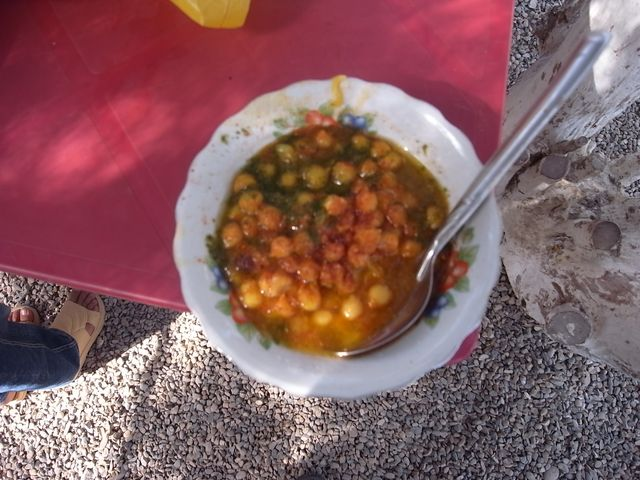
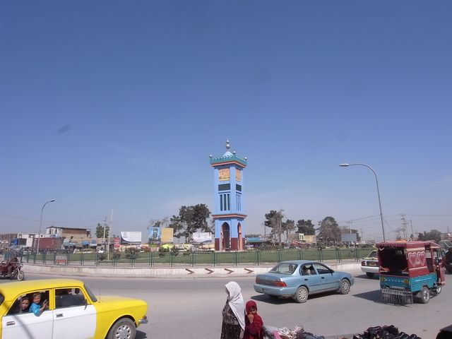
Charahi Sidiqyar
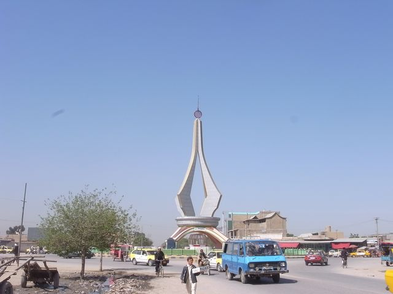
Charahi Haji Ayoub
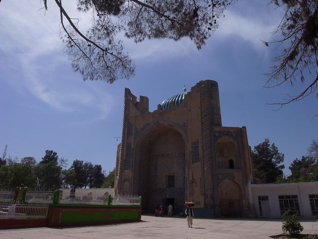
Balkh
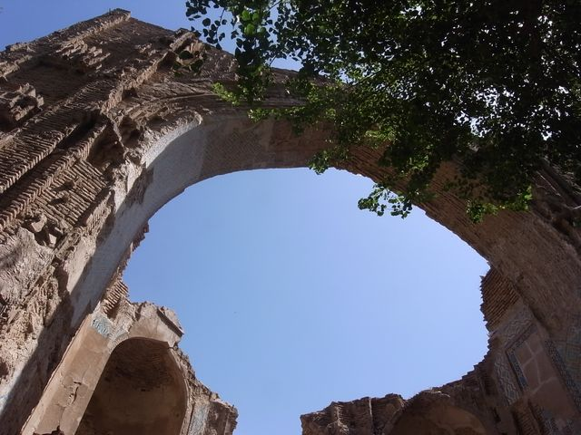
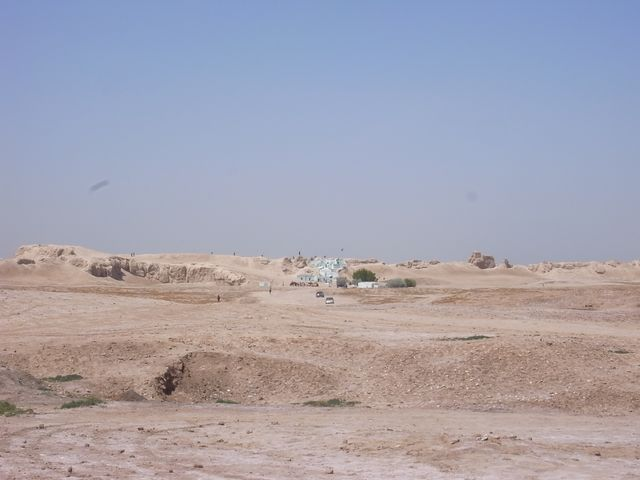
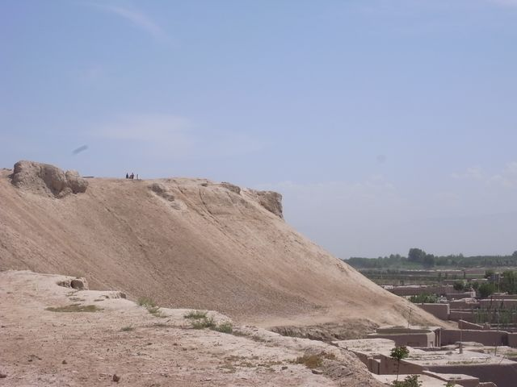
Bala Hissar
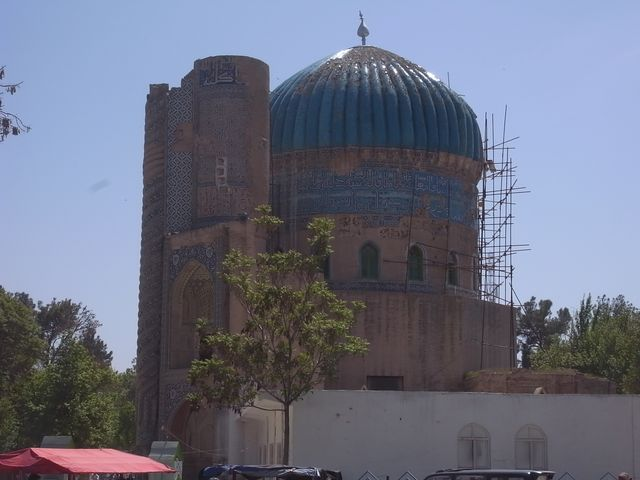
Shrine of Khoja Abu Nasr Parsa
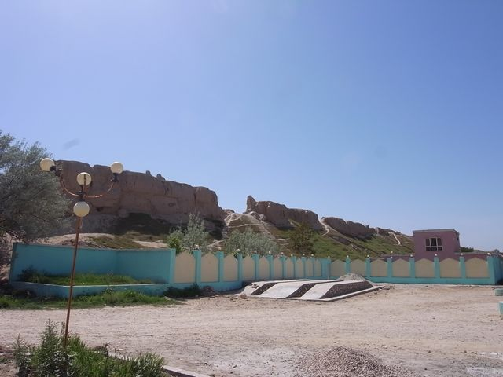
City Walls
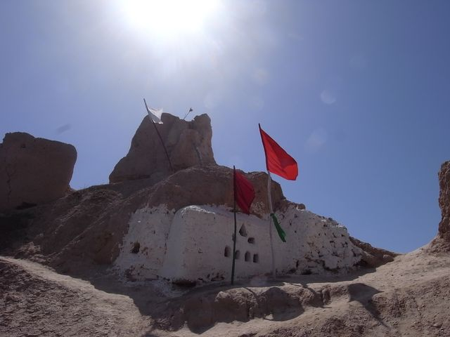
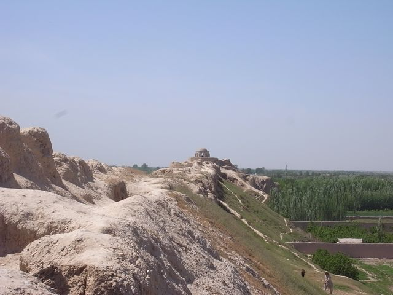
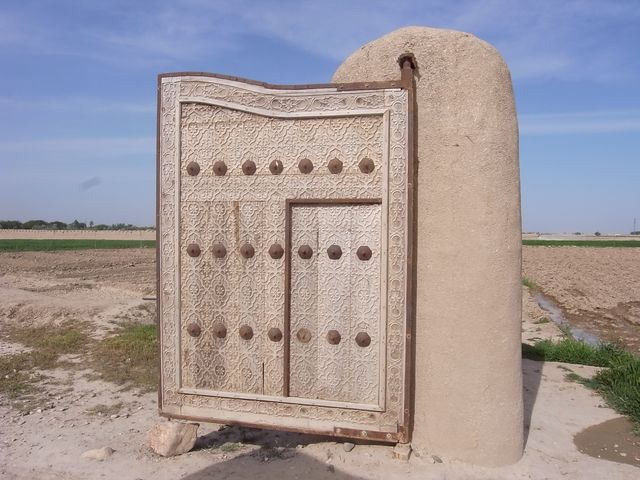
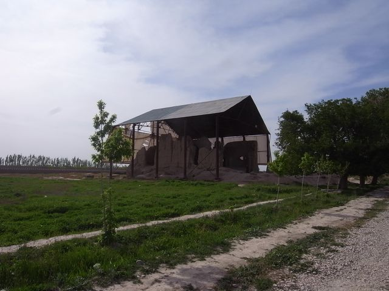
No Gombad Mosque
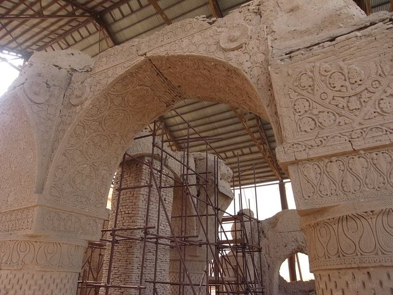
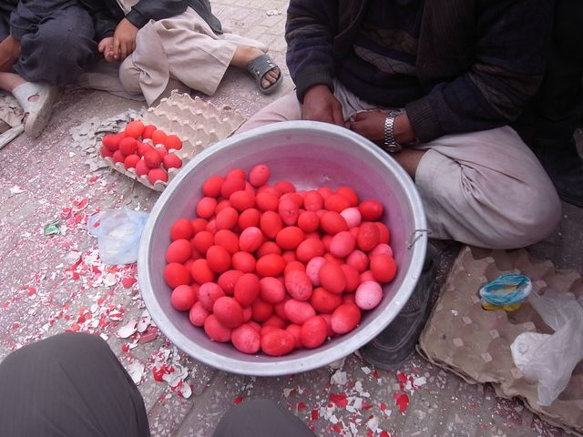
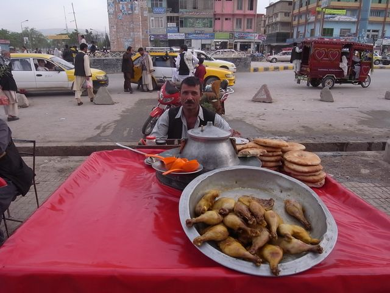
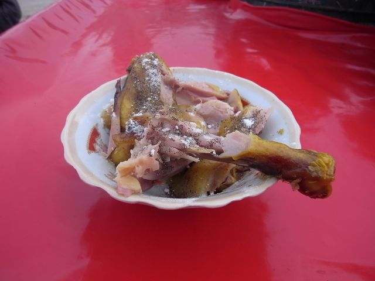
好鬼鹹
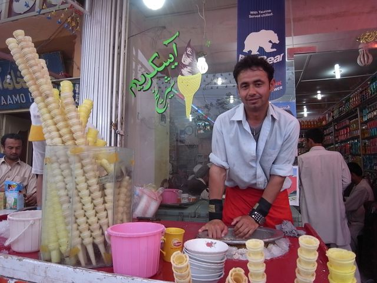
手造雪糕